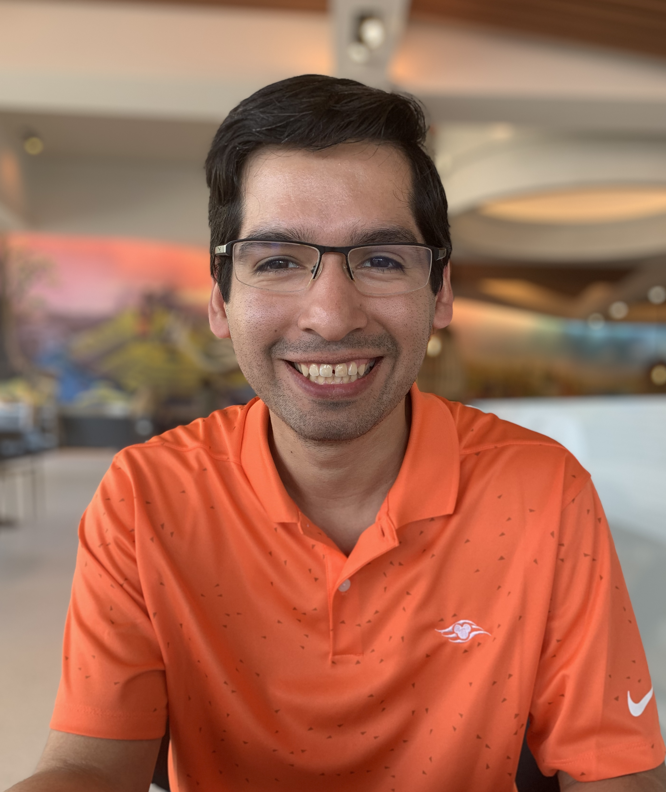

About Me
Hello, my name is Miguel Vargas. I am a Florida based full-stack developer who has 5 years of experience in the industry. I graduated from the University of Central Florida with a degree in computer science and pride myself for my passion for development. I enjoy the challenges programming allots and appreciate any chance to learn new things to help improve myself as a developer.
My main driver in life is my passion to constantly make improvements to things. If there is an opportunity to make something simpler or overall better for the user, I jump at the chance to take part in it. It is the combination of making the solution and having it make a difference at a large scale which motivates me further when my work is published and praised. I have worked in a variety of industries from financial technologies, healthcare technologies, and theme parks/hospitality.
My interests closely align with the theme park industry since it mixes both work and leisure. One of my favorite projects was creating a theme park entry system from scratch on Android, which is my favorite mobile programming platform. Outside of coding, I enjoy playing video games like Halo or Rocket League and visiting the theme parks with my family. Though I enjoy my other hobbies in my free time, I'm still an avid programmer. I like creating my own personal projects, one being my application on the Google Play store for WoW (World of Warcraft) Token Price. WoW Token Price was an app that enabled users to check the in-game currency value against 30-day game time.
Miguel's Q&A
| As a child, what did you want to be when you grew up? |
| I wanted to make video games, but only because I thought you just play video games all day. |
| Where is your favorite place to travel? |
| California. I love how it mixes my two favorite things, theme parks and food. Also I like how it has seasons without getting too cold. |
| What are your favorite coding languages as a developer? |
| C# for backend, Typescript for frontend, and SQL for relational databases. |
| Are there any projects you are proud of? |
| I made a World of Warcraft token app that was my first attempt at writing a full app from scratch and deploying it to the Google Play Store, so I proud of that. |